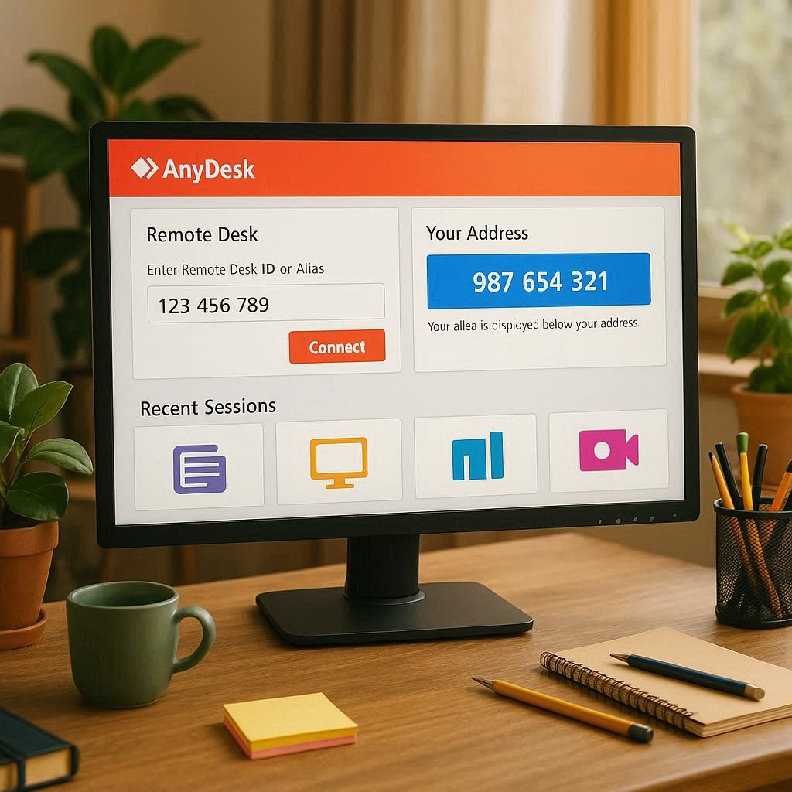

Suporte Técnico Remoto

Resolução de Problemas Online
Com o nosso serviço de suporte remoto, você resolve problemas técnicos de forma rápida e segura, sem precisar sair de casa. Utilizamos o AnyDesk para acessar seu computador com sua permissão, de forma totalmente transparente e segura.
Como Funciona
- Você entra em contato pelo WhatsApp e descreve o problema.
- Nós agendamos um horário e orientamos a instalação do AnyDesk.
- Com a sua autorização, acessamos seu computador para o reparo.
- Você acompanha o processo em tempo real.
- Após a conclusão, você encerra a conexão.
Benefícios do Suporte Remoto
- Rapidez e praticidade.
- Atendimento em qualquer lugar.
- Segurança total e controle do acesso.
- Solução de problemas de software, vírus e configurações.

Problemas que Resolvemos Remotamente
Podemos ajudar com:
- Remoção de vírus e malwares.
- Instalação e configuração de programas.
- Otimização de sistema.
- Configurações de rede e impressoras.
- Solução de erros do Windows.
Precisa de Ajuda Agora?
Clique abaixo para falar comigo diretamente pelo WhatsApp e agendar seu atendimento.
WhatsApp